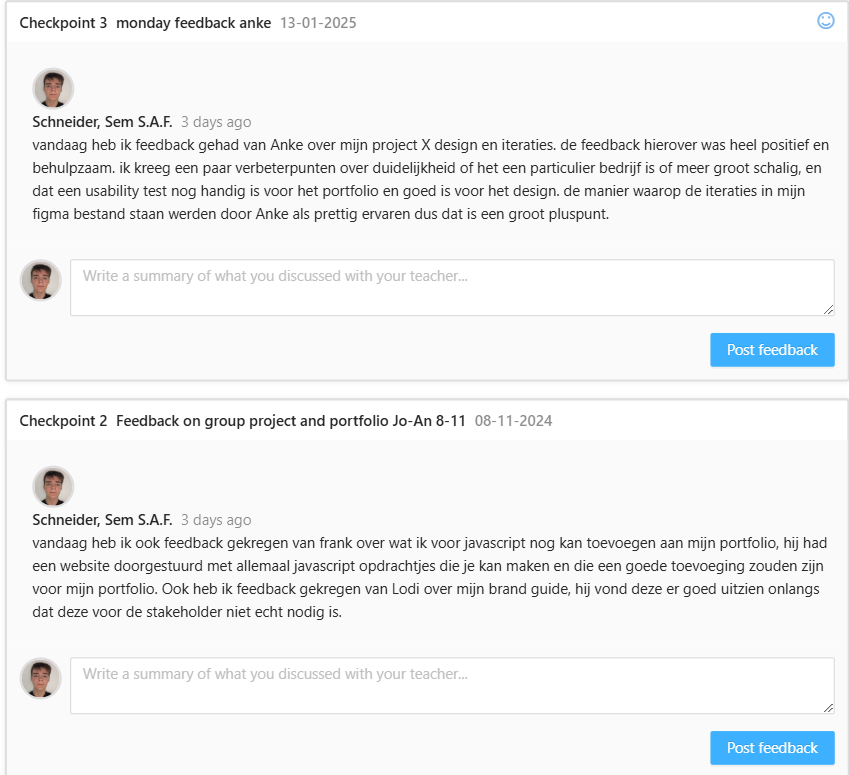
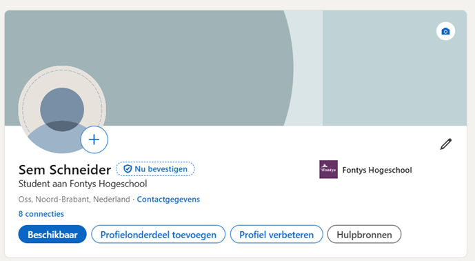

Personal Leadership
Je neemt het initiatief om feedback te vragen en hierover te reflecteren. Je identificeert je eigen kernwaarden als basis voor je studiecarrière en professionele ontwikkeling.
Inhoudsopgave
Core values
Core values workshop Anke
Anke gaf een workshop over core values, waarbij we een opdracht hadden om vier kernwaarden te bedenken die echt bij ons passen. Ik koos voor de volgende kernwaarden:
- -Curious
- -Flexible
- -Down to Earth
- -Caring
Vervolgens ging je met andere studenten (toevallig 2 studenten waarmee ik in de projectgroep zit, dus die kenden me ondertussen wel goed) en overlegde je wat zij dachten dat mijn kernwaarden zijn.
Daaruit kwamen ongeveer dezelfde resultaten, maar in plaats van Curious kwam Openness. Dit betekent ongeveer hetzelfde, aangezien dit gaat over dat ik opensta om nieuwe dingen te leren en om taken aan te nemen binnen een project.
Mijn kernwaarden in actie
Mijn kernwaarden kan ik terugzien in vrijwel alles wat ik doe:
- - Caring: Ik wil anderen helpen. Dit is ook een van de redenen waarom lesgeven als baan me aanspreekt.
- - Down to earth: Ik blijf realistisch over wat haalbaar is, zowel in projecten als in mijn toekomst. Dit kan zeker een nadeel zijn.
- - Teamwork: Samenwerken met anderen vind ik belangrijk en ook leuk. In teams probeer ik altijd een goede sfeer te houden en effectief te communiceren.
- - Curious/Openness: Ik ben altijd open om nieuwe dingen te leren, bijvoorbeeld door gesprekken met docenten of het ontdekken van mogelijkheden van banen / ervaringen via LinkedIn.
- - Flexibel: Ik blijf openstaan voor verandering.
feedback vragen
Tijdens mijn projecten, ben ik bewust bezig geweest met feedback vragen. Dit deed ik niet alleen aan medestudenten en docenten, maar ook aan gebruikers tijdens tests en de klant. Ik wil dan weten wat beter kan, omdat ik geloof dat je door feedback echt groeit. Echter geef ik wel toe dat ik dit wel vaker kan en moet doen. Ik denk te snel dat iets wel goed is of juist niet en dan laat ik het liggen. Neem als voorbeeld mijn design van Nasmak in de Gorilla stijl met de band als tekenfilm personages, hier heb ik ondertussen wel feedback over gevraagd. Dit past bij mijn waarde Curious en Openness, want ik sta altijd open voor nieuwe ideeën en manieren om dingen beter te doen
ik heb in het laatste project veel meer feedback gevraagd en een paar feedpulses.
nadenken over mijn toekomst
Ik ben veel aan het nadenken over wat ik in de toekomst wil doen. Ik twijfel nog tussen game developer en web developer, omdat ik beide super interessant vind. Maar het idee om ooit les te geven op Fontys ICT Media lijkt me ook heel tof. Ik heb hier al met Stan en Frank over gepraat en zij hebben me wat inzichten gegeven over hoe dat is en wat erbij komt kijken. Dit heeft me geholpen om meer helderheid te krijgen over wat ik belangrijk vind in mijn werk later.
Daarnaast heb ik mijn LinkedIn-pagina opgezet. Hier deel ik informatie over mezelf en mijn huidige werk, en probeer ik meer te leren over de industrie. Het is ook een handige plek om contact te leggen met anderen en te kijken hoe zij hun carrière aanpakken.
Zelfreflectie
Verbeterpunten voor het einde van het semester
Dit zijn dingen die ik zeker nog ga verbeteren voor het eind van het semester. Hier ben ik zelf van op de hoogte en dit zijn zaken die ik nog op orde moet stellen en voor de rest van mijn Fontys-opleiding moet doorzetten:
- -Meer feedback vragen en denken aan feedpulses.
- -Communicatie met docenten. Mijn communicatie naar mijn projectgroep is uitstekend, dus daar is niks op aan te merken, maar docenten zouden ook moeten weten of ik later ben of niet aanwezig kan zijn.
Reflectie van reflectie:
- -Ik heb meer feedback gevraagd aan docenten tijdens project X, maar dit mag nog meer worden. Ik heb genoeg feedback gehad om meerdere goede toevoegingen of bevestigingen over keuzes te krijgen en deze toe te voegen aan het design. Feedpulses moet ik echt aan denken; dat heb ik echt slecht bijgehouden voor de hoeveelheid feedback die ik kreeg!
- -Communicatie is heel veel beter geworden. Als ik een keer later aanwezig was of er niet bij kon zijn, heb ik dit op tijd medegedeeld aan de desbetreffende docent.